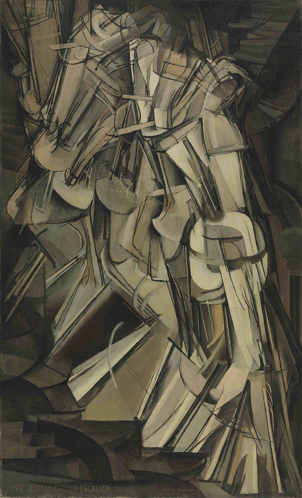

Public Time and the Privacy of Time
An old Levi’s ad that ran when I lived in India went like this: “It’s the thread in your seams that’s tied to your dreams. It’s the soles in your feet that keep the beat.”
Friday, November 13, 2020 · 3 min read
Over the months I’ve started to miss the little speckles of Stanford life that I never thought I would get attached to. One of them is the regular bell-toll of our lovely little clock tower. There is something oddly compelling about public time — time as a utility — time as something to be broadcast for consumption. So I have a special fondness for clock towers, and the Network Time Protocol, and the anchor who says “it’s 8am and this is NPR,” and the GPS system, and people who set their clocks by the atomic clock in Boulder, and the website time.gov, and the pilot who says “we will be landing shortly in San Francisco, the local time is 6:15am.” At least, in this divided world, we can agree on something.
Well: This evening I was tuning my guitar, and I discovered some more public time. Here is what happened. First I plucked the low E string, and watched the string blur into a lenslike pair of arks that envelop the extent of its vibration. I ran the first few frets to try out the sound: F, F-sharp, G, G-sharp. Great! Next, I plucked the A string, and watched the same blur of the string. But when I tried plucking it at the first fret — that would be a B-flat — something bizarre happened. Instead of a vibrating blur, the string slowly wavered back and forth between its two extremes!
What? I rubbed my eyes. A low “Bb” vibrates at around 117 Hz. That is much faster than my eye can resolve (because of this “persistence of vision,” animations in video games don’t have much incentive to exceed around 60 frames per second). In short, I should be seeing a blur. But no! I can track the string’s leisurely wobble quite easily. I bet you can, too: the GIF below shows an open-string A on the left and a first-fret Bb on the right.

(Sorry for the poor quality — I had to hold my phone between my knees — it was tricky, okay? You can find the original videos, with sound, on Github.)
Here’s what I think is going on. The lights in my room are powered by AC current from the power grid. In the United States, AC current is standardized to transmit at 60 hertz (why 60? apparently it’s a long story, but in part the number 60 is related to turbine hardware logistics). That means that the current peaks in (absolute) voltage 120 times per second, and so the lights in my room are actually all rapidly flickering at 120 Hz. I just don’t realize it because of the persistence of vision.
Ah! As I mentioned above, a Bb vibrates at around 117 Hz — to be precise, it’s 116.54 Hz. You can work this out without looking it up by recalling that concert A is 440 Hz (as printed on every metronome) and the low Bb is two octaves less one half step below — that’s twice twelve minus one or 23 half steps below. Indeed, 440/(2^(23/12)) gives 116.54.
Why is this correspondence between 120 and 116.54 so interesting? Well, when you have nearby frequencies, they inferfere to produce “beat” frequencies. I’ve written about beats in the spatial domain before when talking about moiré patterns. Here, the beats are in the temporal domain, forming a kind of “wagon wheel” illusion. The superposition of the string’s vibration and the light’s flickering creates a low-frequency “beat” that gives the illusion of the string vibrating slowly.
Eyeballing the right GIF, I count around 5 oscillations of the string over the 3-second clip. That gives a beat frequency of 1.67 Hz. The difference in interfering frequencies is twice the beat frequency (elementary trigonometry exercise, use the sum-to-product identity). Using that difference, I can compute that my Bb is tuned to 120 Hz - 3.3 Hz = 116.7 Hz. Not bad! It turns out that you can buy “stroboscopic tuners” online, but perhaps if you are good at estimating slow frequencies, you don’t need one…!

Briefly, some thoughts for the future: I’m reminded by my guitar string of Edgerton’s hummingbirds and Muybridge’s horses, and many more moments frozen in time. There is a lot more I could say, and that I have said, and perhaps I will explain this more carefully in a future essay. The confluence of the aural and visual has also been on my mind lately; though I haven’t “blogged” about it I have been thinking a lot about clocking coin tosses by recording the sound a coin makes while it rings. In that story, too, stroboscopic techniques make an appearance. Maybe I will say more about that as well.
For the moment however I am struck — “struck” — by how strange it is that there is so much invisible to us even in plain sight, so much hidden in the folds of time. Public time, and the privacy of time.
